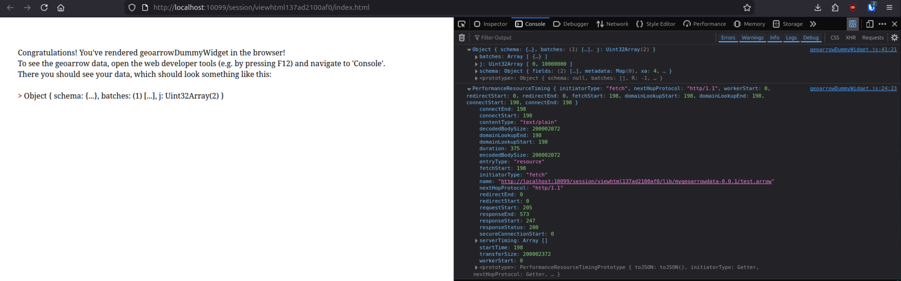

geoarrowWidget
The aim of geoarrowWidget is to facilitate fast transfer of geospatial data between R memory and the browser using geoarrow memory layout. It provides functionality to attach geoarrow data to existing htmlwidgets along with the relevant JavaScript libraries to handle this data in the browser context. It does not do anything useful beyond the data transfer. It is up to the user/devloper to make further use of this data, e.g. render it somehow, using JavaScript.
Installation
Not on CRAN yet, so install from github:
remotes::install_github("r-spatial/geoarrowWidget")Usage example
For testing purposes, geoarrowWidget provides a minimal htmlwidget called geoarrowDummyWidget. Here’s an example of how to use it:
library(geoarrowWidget)
library(wk)
library(nanoarrow)
library(geoarrow)
### generate some random sf points data ========================================
n = 1e5
dat = data.frame(
id = 1:n
, geometry = xy(
x = runif(n, -160, 160)
, y = runif(n, -40, 40)
, crs = 4326
)
)
### setup and write to tempfile as geoarrow ====================================
fl = tempfile()
dir.create(fl)
path = file.path(
fl
, "test.arrow"
)
interleaved = FALSE
data_stream = nanoarrow::as_nanoarrow_array_stream(
dat
, geometry_schema = geoarrow::infer_geoarrow_schema(
dat
, coord_type = ifelse(interleaved, "INTERLEAVED", "SEPARATE")
)
)
nanoarrow::write_nanoarrow(data_stream, path)
### create widget and check browser console ====================================
wgt = geoarrowDummyWidget(file = path)
options(viewer = NULL)
wgtThis will create a web page with the data attached as a geoarrow object. In the browser console (press F12) this will look something like this (depending on the browser obviously, Librewolf in this case). You should see two entries:
-
Object- the geoarrow data -
PerformanceResourceTiming- details about the performance of loading the data includingencodedBodySizeof the data in Bytes anddurationin milliseconds.
Another way to see how long it takes to load the data is to open the Network tab in the developer tools and refresh the page.
Note: the 200MB encodedBodySize and 375ms duration in the screenshot are the result of running the above code with 1e7 points.
The page source (press <CTRL + u>) will look something like this, where in line 11 you see the attached test.arrow file and above the necessary scripts (arrow and geoarrow JS bindings) to process the data further in JavaScript.

The general usage pattern is highlighted in these lines of geoarrowDummyWidget